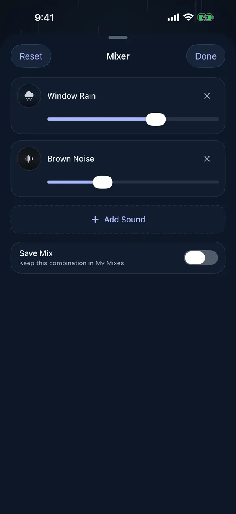

White noise and fan sounds
White noise is a steady, bright hiss that covers voices and other sounds that come and go. A fan or an air conditioner does the same job with a lower, more familiar hum.
Moonrain is a free sleep-sound app for iPhone, iPad and Apple silicon Macs. It works completely offline: no account, no ads, no subscription and no tracking.
In the app
- White NoiseBright hiss that hides voices
- Pink NoiseSofter than white noise
- Brown NoiseDeep rumble that hides traffic
- Deep FanLow steady hum
- Box FanSteady breeze and motor
- Air ConditionerCool room hum
- Hair DryerBright airy whoosh
Play up to four of Moonrain's 28 sounds at once, each with its own volume, and set a sleep timer that fades everything out. Or leave it on: it plays all night with the screen locked.

Built-in presets
Night Flight
Thin walls
A low, steady hum for muffled TV and footsteps.
Voices through the wall
For work, the noise lab in Environments plays brown, pink or white noise with a Tone slider that runs from darker to brighter.
Questions
Will it keep playing all night?
Yes. Moonrain plays all night with the screen locked, and you can control it from the Lock Screen. The timer also has an All night option with no timer.
Can I make the noise stop after I fall asleep?
Yes. Set the sleep timer and Moonrain fades the sound out at the end instead of cutting it off.
Does it need an internet connection?
No. Every sound is built into the app, so it works offline, including in airplane mode.
Can I mix a fan with other sounds?
Yes. You can play up to four sounds at once, each with its own volume, for example a deep fan under brown noise or rain.